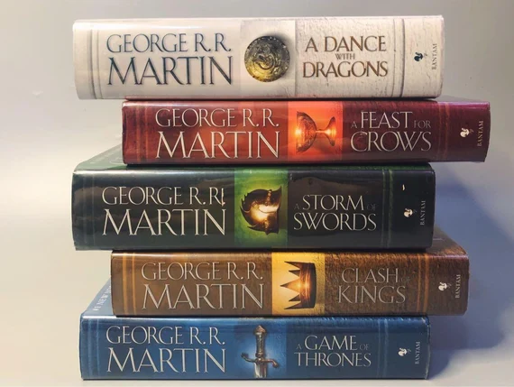

Bibliography
Novels:
- Dying of the Light, Simon & Schuster, 1977
- Windhaven (with Lisa Tuttle), Timescape, 1981
- Fevre Dream, Poseidon Press, 1982
- The Armageddon Rag, Poseidon Press, 1983; Nemo Press, 1983
- Dead Man’s Hand (with John J. Miller), Bantam Books, 1990
- Lands of Ice and Fire, Bantam, 2012
- World of Ice and Fire (with Elio M. García, Jr., and Linda Antonsson) Bantam, 2014
- A Song of Ice and Fire:
- A Game of Thrones, Bantam Books, 1996
- A Clash of Kings, Bantam Books, 1999
- A Storm of Swords, Bantam Books, 2000
- A Feast for Crows, Bantam Books, 2005
- A Dance with Dragons, Bantam Books, 2011
- The Winds of Winter, forthcoming/Bantam Books
- A Dream of Spring, forthcoming/Bantam Books
Short Story Collections:
- A Song for Lya and Other Stories, Avon, 1976
- Songs of Stars and Shadows, Pocket Books, 1977
- Sandkings, Timescape, 1981
- Songs the Dead Men Sing, Dark Harvest, 1983
- Nightflyers, Bluejay Books, 1985
- Tuf Voyaging, Baen Books, 1986
- Portraits of His Children, Dark Harvest, 1987
- Quartet, NESFA Press, 2001
- GRRM: a rretrospective, Subterranean Press, 2003
- Starlady / Fast- Friend, Subterranean Press, 2008
- Shadow Twin (with Gardner Dozois and Daniel Abraham), Subterranean Press, 2005
- Knight of the Seven Kingdoms (fully illustrated by Gary Giani), Bantam Books, 2015
Children Books:
- The Ice Dragon (illustrated by Yvonne Gilbert), Starscape, 2006
